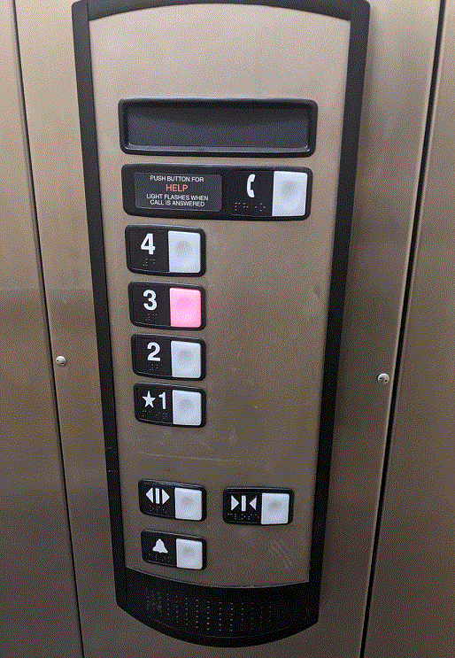
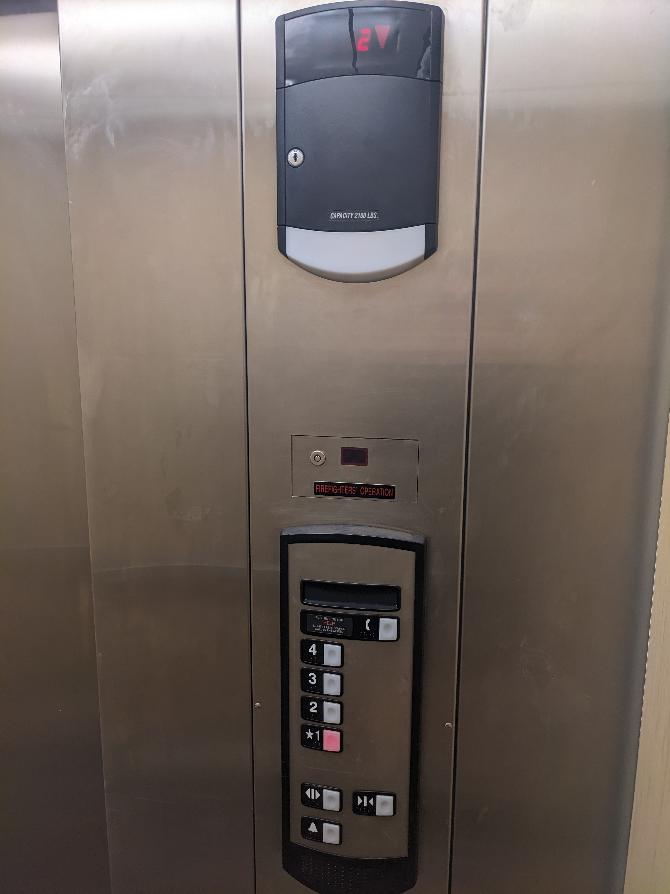

Picture 1. The photo of control panel
Picture 2. The elevator in operation of control panel

Picture 3. The photo of control panel and floor indicator
1) The current floor indicator is on a different panel than the buttons
2) The floor sign and arrows are placed too high
3) The Help button is too far to the floor buttons
The floor buttons follow the natural order of things
The elevator has Braille to support people who are visually impaired
1) Since the floor number and the direction arrows are too high, people don't look at them
2) No one cleans them. So they are too dusty and barely visible.
3) It's possible to accidentally push help button since it's too close to the floor buttons
1) Floor Buttons
2) Open and Close the door Buttons
3) Looking at the floor number
The current design makes it easy to find and push your floor button and maybe open the door for another person
However, it's almost impossible to know which floor you're on. I personally almost missed that top panel
1) Help Button
2) Emergency Button
1) A user call the elevator via external internal interface and enters the elevator
2) A user visually find the control panel and pressing the button corresponding to the desired floor
3) A user can look at the floor number indicator waiting for arrival
4) A user leaves the elevator
Good height position of the main control interface and the natural order of floor buttons.
The selected floor lights up red. And the current floor number on the top. Though, people often don't see it.
You can accidentally push Help button. Since you don't see the current floor number, you can leave on the wrong floor
1) Combine everything into one control interface
2) Place Help button further away from Floor buttons